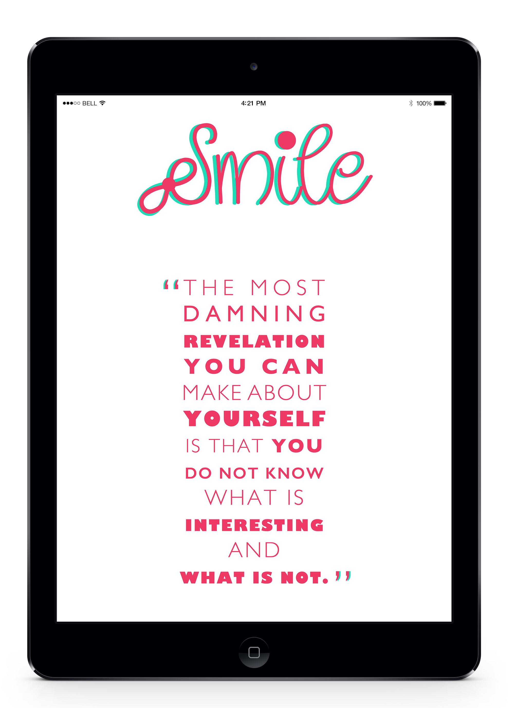
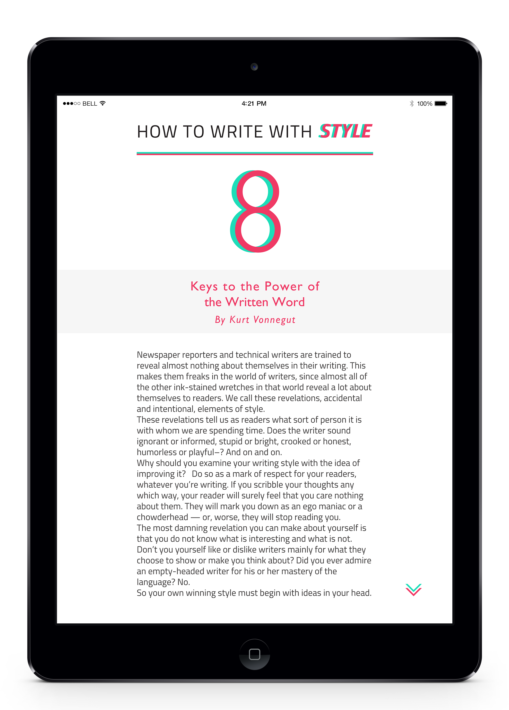
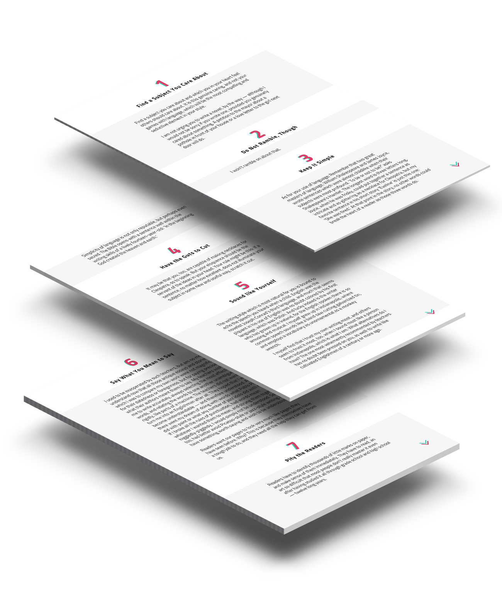
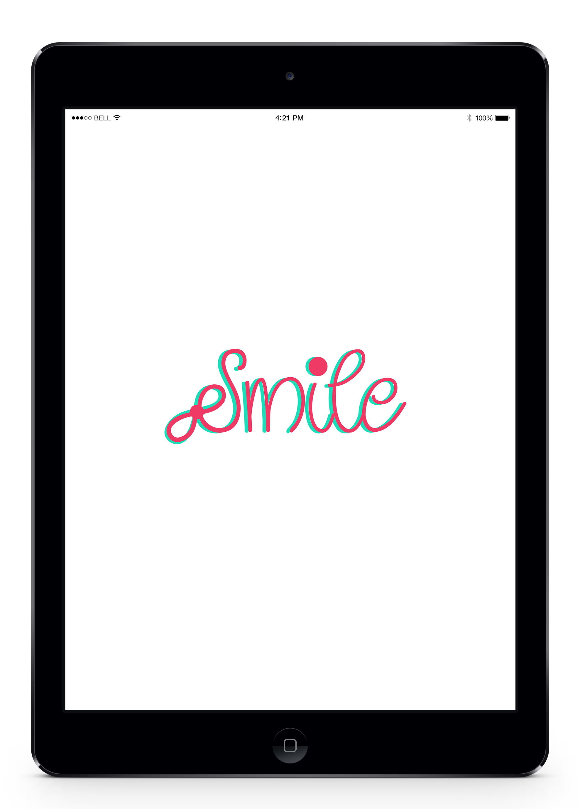

SMILE
This is a project for my Digital Typography course, at Scuola Politecnica di Design. The brief was to select a logo that grabbed my attention and to recreate that logo with respect to a feminine mood and also create an animation for that logo. After the logo creation, I was asked to create an article for an ebook with the same mood of the logo.
ORIGINAL LOGO
REASON BEHIND INSPIRATION:
The moment I saw this logo, it put a smile on my face. Just by creatively using typographical elements, this creates an emotion. Every time I read this I do smile, which I think I wouldn’t if not for the ‘smiley’ that is created within the word using the bracket and the letter ‘i’.
LOGO REDESIGN
Typeface used for the logo is ‘Quirlycues’. This is a very feminine typeface with a beautiful elegance of it’s own. The curly strokes makes it look happy, lively and also more relatable.
I wanted to show a good contrast between the colours, that’s the reason I chose two completely contrasting colors to make the logo look more bright and vibrant. I added the ‘infinity symbol’ to the letter ‘S’ as it is something very close to women, it conveys a strong meaning that every women could relate to. That’s the primary reason to incorporate the infinity symbol in the logo.
eBook Article
As my logo was very cursive and curly, I wanted the title and the running text of the article to be more geometric. Thus I chose ‘Gill Sans’ for titles and ‘Titillium’ for running text.
For the color scheme, I tried to maintain the same colors as the logo so that it will balance the feminine mood.
  